Reported
1 of 5 entries
Weavers Loan, Dundee
Third-floor flat2 bedrooms £95,000Offers over
- Neighbourhood
- Area to confirm
- Walk from Tip Top
- 13 min · 0.7 milesApproximate route
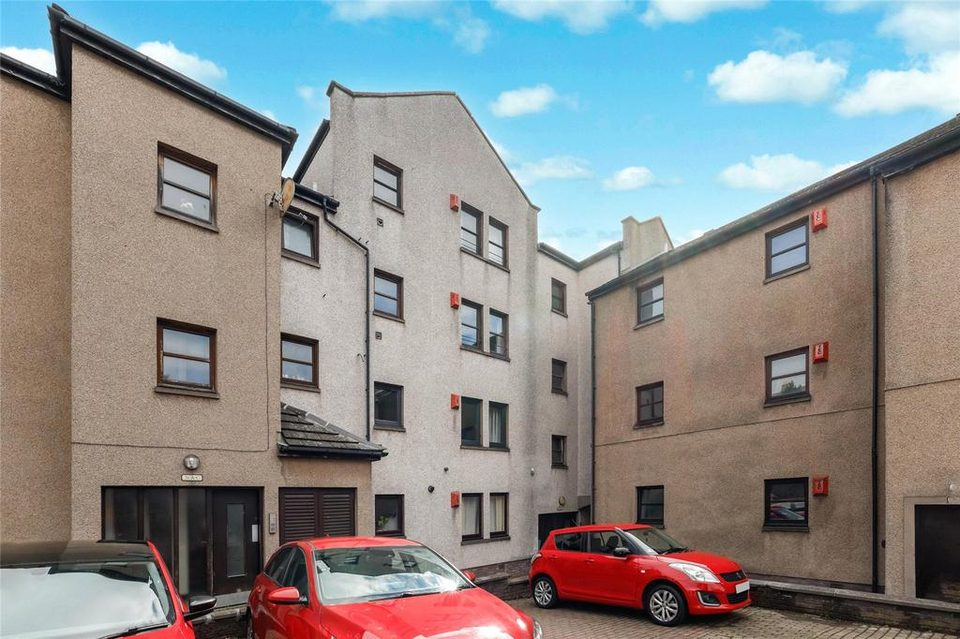
Reported
8 entries
3 Collingwood Street, Broughty Ferry
Ground-floor flat2 bedrooms £230,000Offers over
- Neighbourhood
- Broughty Ferry
- Walk from Tip Top
- 108 min · 5.6 milesApproximate route
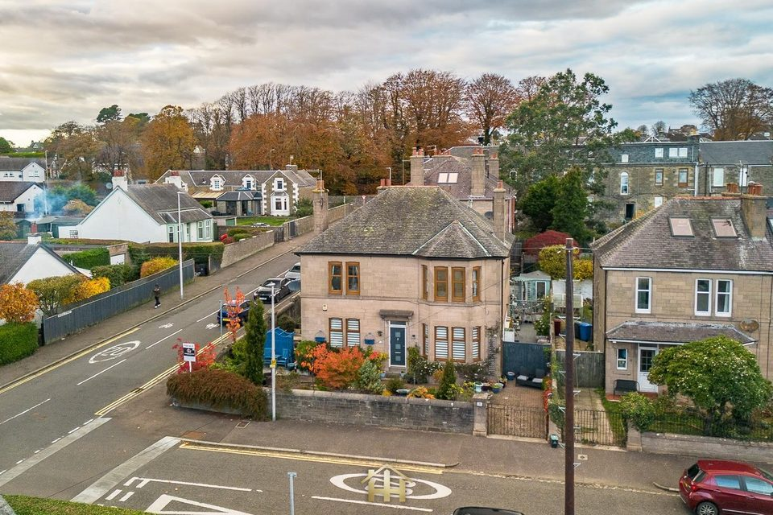
13 Strawberrybank, Dundee
Upper-floor conversion2 bedrooms £149,000Offers over
- Neighbourhood
- West End
- Walk from Tip Top
- 41 min · 2.2 milesApproximate route
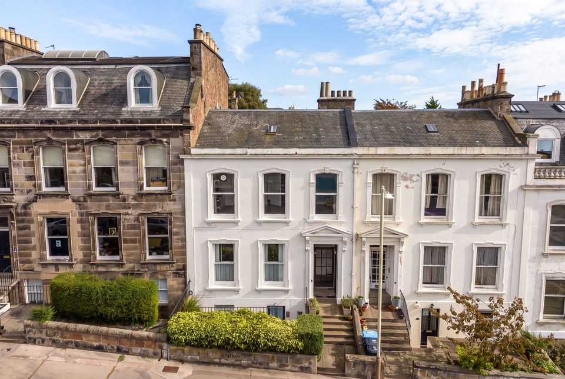
29 Dunalistair Gardens, Broughty Ferry
Ground-floor apartment2 bedrooms £145,000Offers over
- Neighbourhood
- Broughty Ferry
- Walk from Tip Top
- 94 min · 4.8 milesApproximate route
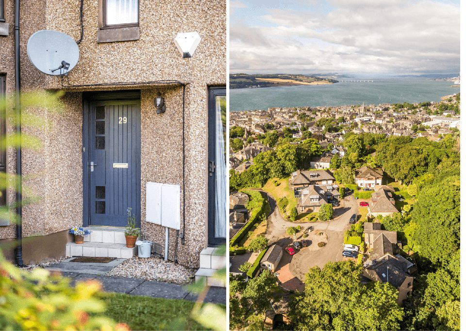
Queen Street, Broughty Ferry
First-floor flat2 bedrooms £130,000Offers In Excess Of
- Neighbourhood
- Broughty Ferry
- Walk from Tip Top
- Walking distance unavailable
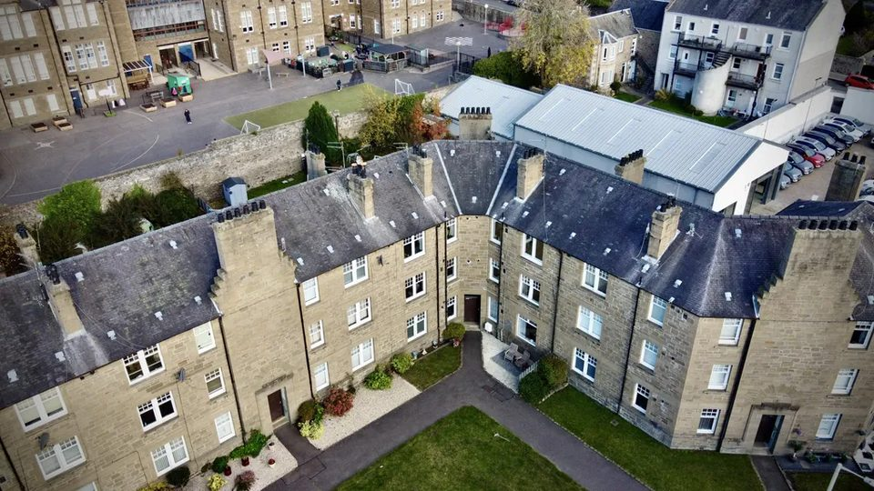
Queen Street, Broughty Ferry
First-floor flat2 bedrooms £130,000Offers in excess of
- Neighbourhood
- Broughty Ferry
- Walk from Tip Top
- 85 min · 4.4 milesApproximate route
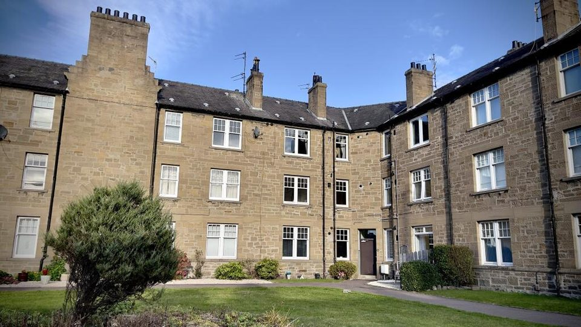
5 Cambustay Gardens, Broughty Ferry
Semi-detached villa3 bedrooms £240,000Offers Over
- Neighbourhood
- Broughty Ferry
- Walk from Tip Top
- 105 min · 5.4 milesApproximate route
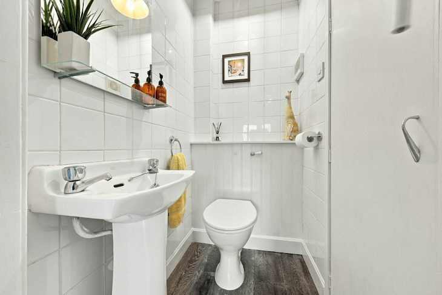
6 Caledonian Court, Eastwell Road, Dundee
First-floor flat2 bedrooms £90,000Offers Over
- Statistical area
- FairmuirNeighbourhood unconfirmed
- Walk from Tip Top
- 29 min · 1.5 milesApproximate route
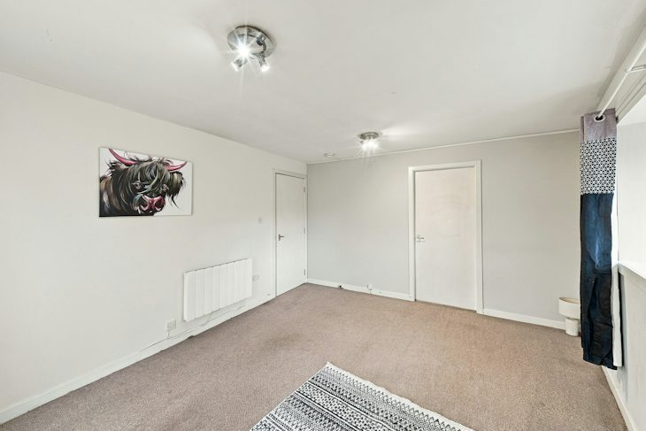
13 Dryburgh Street, Dundee
End-terrace house3 bedrooms £80,000Offers over
- Neighbourhood
- DryburghPostcode estimate
- Walk from Tip Top
- 41 min · 2.1 milesApproximate route
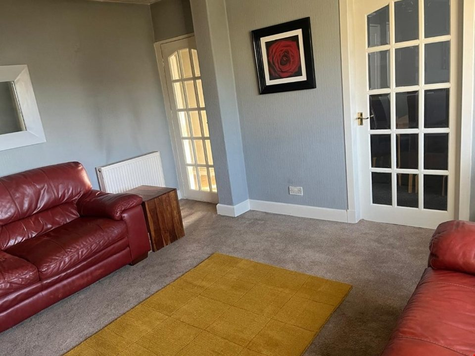
Reported
5 entries
Brook Street, Broughty Ferry
£220,000Offers over
- Neighbourhood
- Broughty Ferry
- Walk from Tip Top
- 88 min · 4.6 milesApproximate route
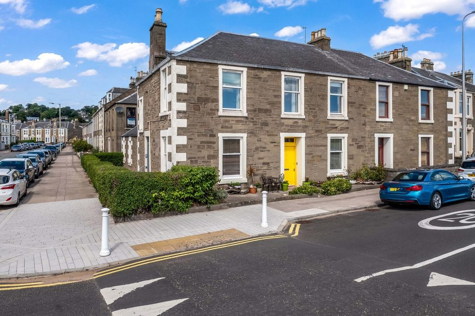
35 Mains Drive, Dundee
Semi-detached bungalow3 bedrooms £200,000Offers over
- Neighbourhood
- Area to confirm
- Walk from Tip Top
- 18 min · 0.9 milesApproximate route
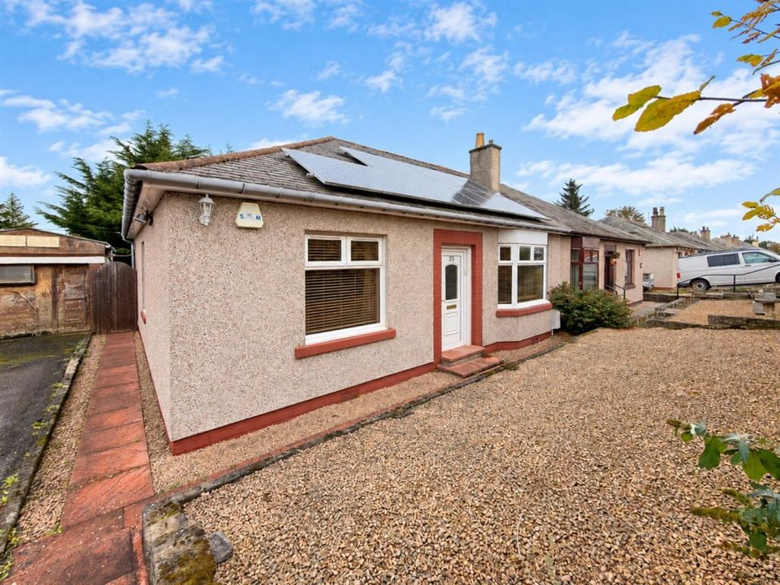
- Neighbourhood
- LawMapped area estimate
- Walk from Tip Top
- 11 min · 0.5 milesApproximate route
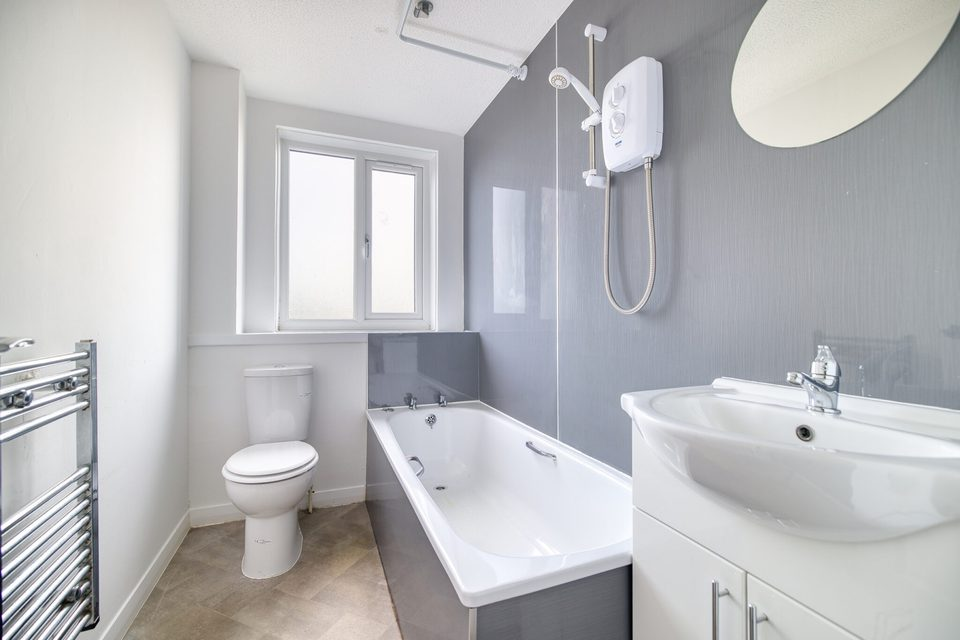
10 Binsted Avenue, Dundee
Semi-detached house3 bedrooms £230,000Offers over
- Statistical area
- FairmuirNeighbourhood unconfirmed
- Walk from Tip Top
- 18 min · 0.9 milesApproximate route
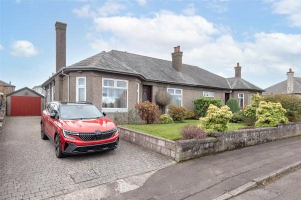
21C Kenmore Terrace, Dundee
First-floor flat2 bedrooms £90,000Offers over
- Neighbourhood
- LawMapped area estimate
- Walk from Tip Top
- 21 min · 1.0 mileApproximate route
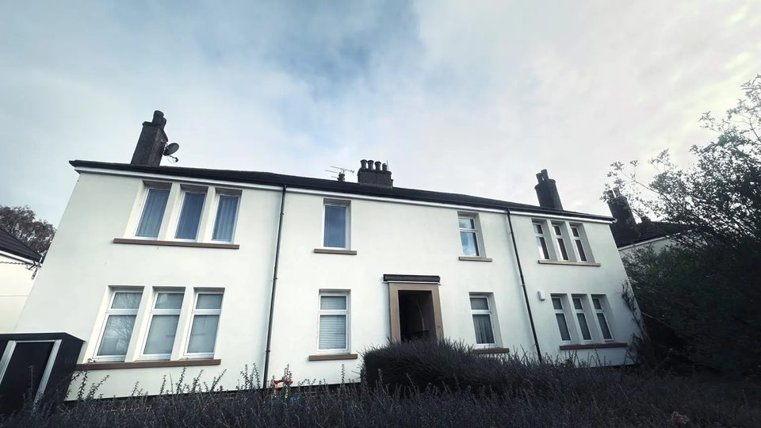
Reported
5 entries
18 Netherton Terrace, Dundee
Semi-detached house2 bedrooms £200,000Offers over
- Neighbourhood
- MenzieshillMapped area estimate
- Walk from Tip Top
- 44 min · 2.2 milesApproximate route
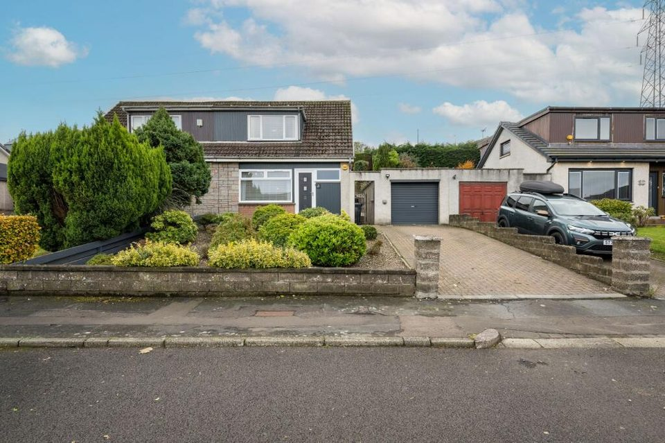
Balbeggie Terrace, Dundee
Semi-detached house3 bedrooms £145,000Offers over
- Neighbourhood
- DouglasPostcode estimate
- Walk from Tip Top
- 58 min · 3.1 milesApproximate route
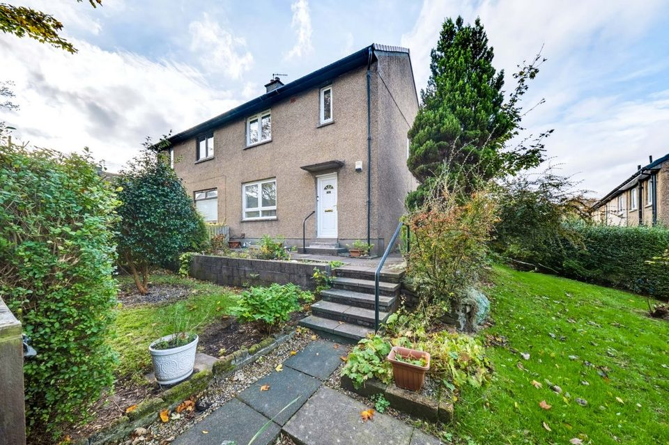
Flat C, 99 Seagate, Dundee
£135,000Offers over
- Neighbourhood
- City Centre
- Walk from Tip Top
- 21 min · 1.1 milesApproximate route
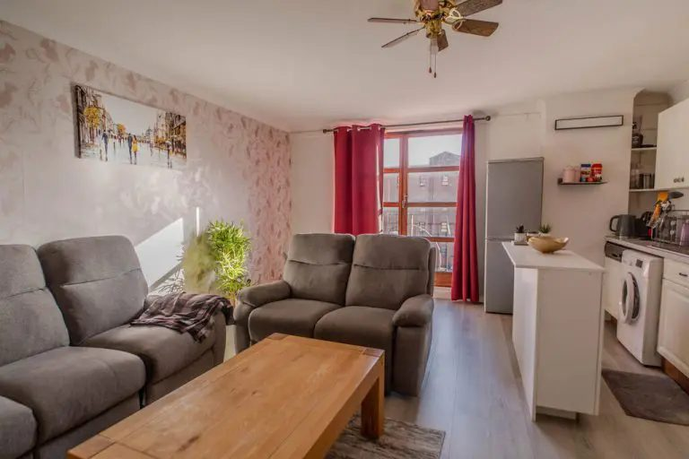
£90,000Offers in excess of
- Neighbourhood
- Fairmuir
- Walk from Tip Top
- 6 min · 0.3 milesApproximate route
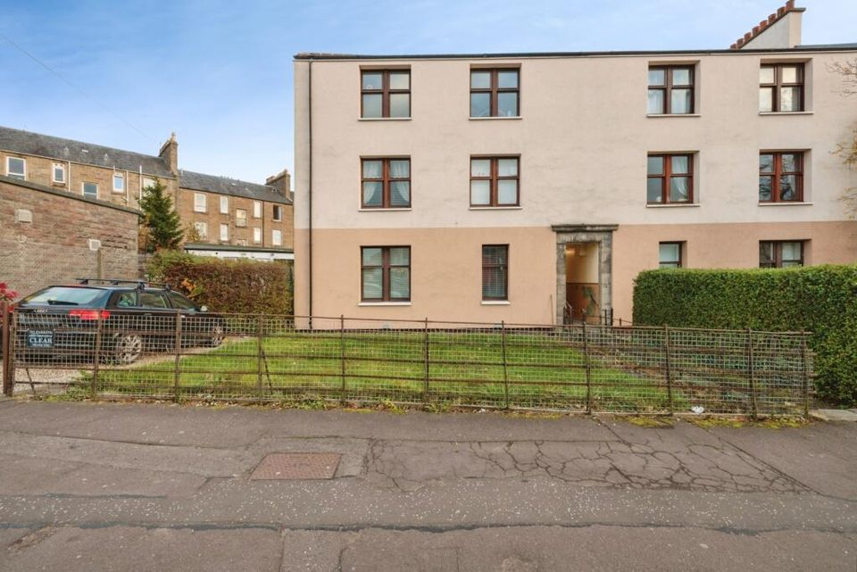
6 Craigielea Terrace, Dundee
First-floor flat3 bedrooms £95,000Offers Over
- Neighbourhood
- Mid CraigieMapped area estimate
- Walk from Tip Top
- 35 min · 1.9 milesApproximate route
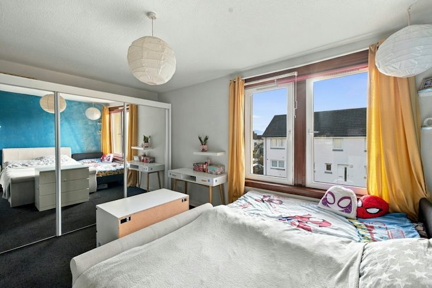
Reported
1 entry
81 Dunholm Road, Dundee
End-terraced house2 bedrooms £125,000Offers Over
- Neighbourhood
- CharlestonPostcode estimate
- Walk from Tip Top
- 57 min · 3.0 milesApproximate route
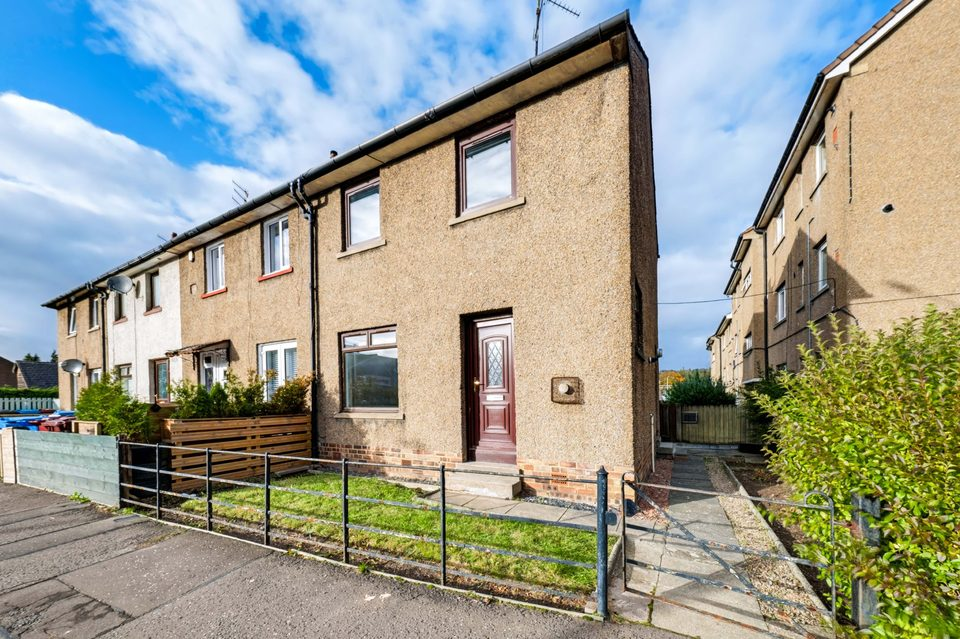